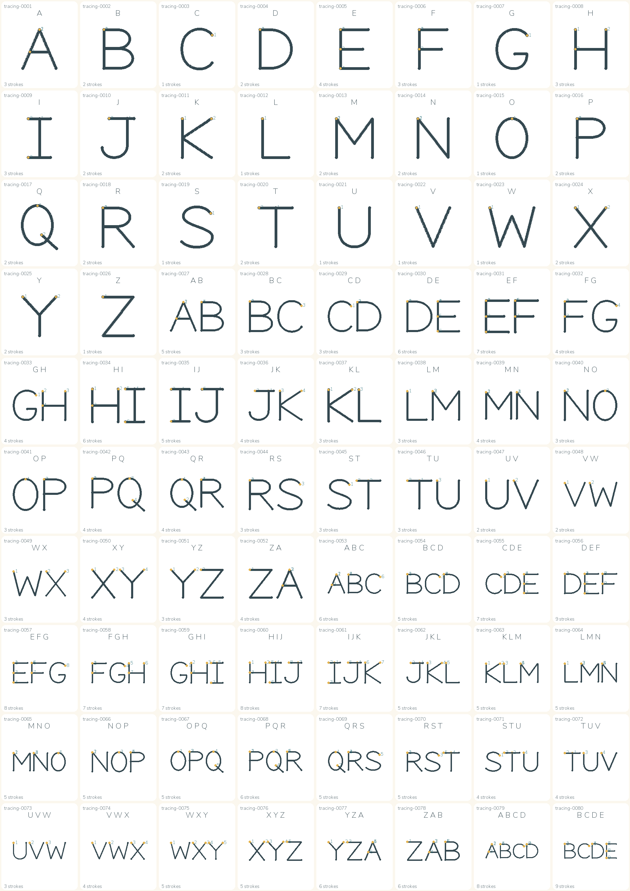
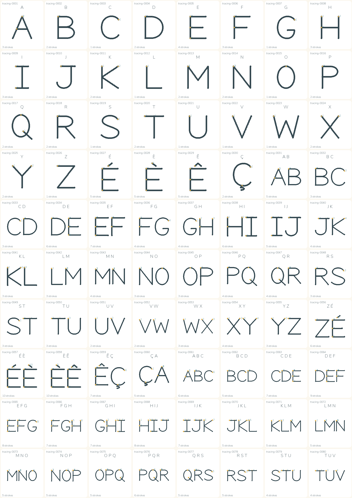
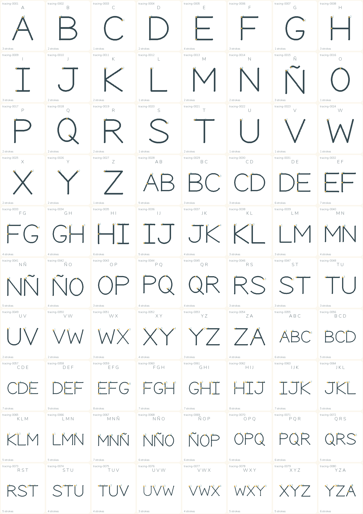
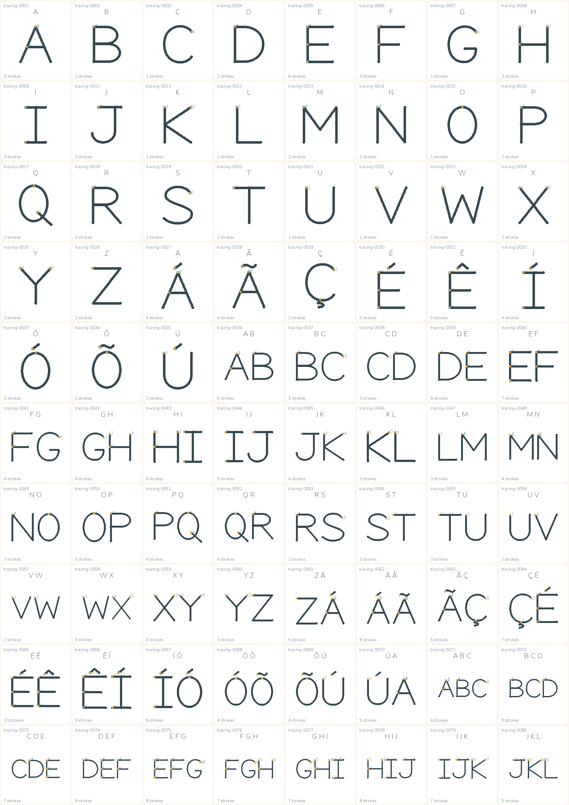
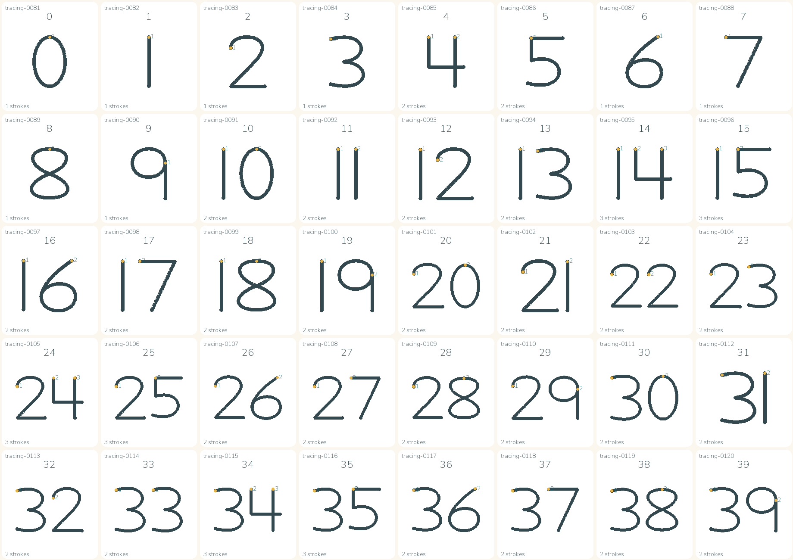

All 320 letter and sequence guides, plus 40 numerals. The app model and canvas use these same centre lines. Gold dots and numbers mark pen starts in order. Open a sheet to inspect it at full size.
These are print manuscript guides, not cursive. Schools may teach other valid formation conventions. Original paths use consistent manuscript pen order, natural widths, a common baseline and uniform scale. Accents follow each letter’s body.
Native Android examples: French accents · Spanish letters with Arabic instructions · Portuguese model with French instructions in landscape.





Formation reference: Zaner-Bloser manuscript practice package, formation pages 113–116. Reference artwork is not bundled in the app.